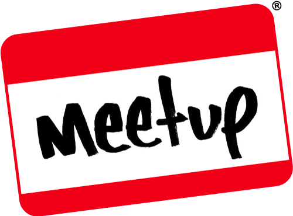
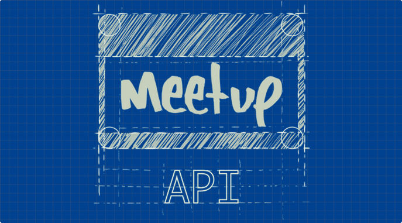

Analysing London's NoSQL meetups
Mark Needham @markhneedham

Expose data via APIs

Very graphy data
Meetup API
- Members
- Events
- RSVPs
- Venues
- Groups
- Topics
The Meetup Graph
*Diagram goes here*
Get the codez

http://github.com/mneedham/neo4j-meetup
Initial Model
Let's have a look at the graph
- Find insights from existing data
- Visualisation of the data (with Alistair)
- Pull in more data sources
- Continents - Wikipedia
- Weather - wunderground
- GDP - Madison Historical GDP Data
- Club teams - Wikipedia or ESPN